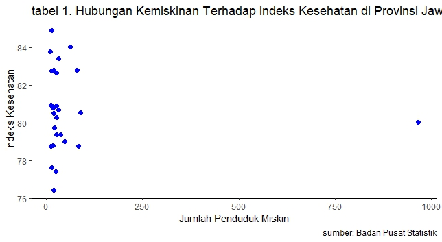

Pengaruh Kemiskinan terhadap Indeks Kesehatan di Provinsi Jawa Barat Tahun 2021
Metode Penelitian Politeknik APP Jakarta

1 Pendahuluan
1.1 Latar belakang
Kemiskinan adalah sebuah kondisi dimana seseorang atau sekelompok tidak mampu untuk memenuhi kebutuhan dasar hidupnya. Selain itu, kemiskinan menjadi permasalahan sosial yang kompleks karena memiliki dampak yang luas seperti terhadap indeks kesehatan.
Hubungan antara kemiskinan sering dikaitkan erat dengan indeks kesehatan jika angka kemiskinan tinggi diyakini dapat menghambat akses masyarakat terhadap layanan kesehatan, makanan bergizi, dan pola hidup sehat karena masyarakat memiliki keterbatasan dalam pendapatan. Hal itu membuat kondisi kesehatan masyarakat cenderung memburuk.
Jawa Barat sebagai salah satu provinsi yang memiliki jumlah penduduk terbesar di Indonesia juga masih memiliki tantangan dalam bidang sosial maupun ekonomi. Meskipun pemerintah telah membuat program untuk menekan angka kemiskinan dan meningkatkan indeks kesehatan, masih terdapat tantangan seperti terjadi kesenjangan kondisi kesehatan antar daerah dan kelompok masyarakat.
1.2 Ruang lingkup
Ruang lingkup pembahasan masalah di penelitian ini adalah mengenai hubungan kemiskinan terhadap indeks kesehatan di Provinsi Jawa Barat, penelitian ini menggunakan data time series yaitu pada tahun 2021. Batasan ini dibuat untuk membatasi jangkauan materi yang akan di bahas dalam penelitian ini.
1.3 Rumusan masalah
- Apakah kemiskinan memiliki hubungan terhadap indeks keshatan di Jawa Barat?
1.4 Tujuan dan manfaat penelitian
Berdasarkan latar belakang, dan rumusan masalah maka tujuan dari penelitian ini adalah mengetahui hubungan kemiskinan terhadap indeks kesehatan di Provinsi Jawa Barat pada tahun 2021.
Adapun manfaat dari penelitian ini adalah untuk meningkatkan kesadaran mengenai hubungan kemiskinan terhadap indeks kesehatan.
1.5 Package
Ini tidak wajib ada di packages yang digunakan antara lain sebagai berikut:
library(tidyverse)
library(readxl)
library(KableExtra)
library(dplyr)2 Studi pustaka
Kemiskinan
Kemiskinan adalah sebuah kondisi dimana seseorang atau kelompok tidak mampu memenuhi kebutuhan dasar hidupnya. Menurut Badan Pusat Statistika (2021 ) mendefinisikan kemiskinan sebagai ketidakmampuan dari sisi ekonomi untuk memenuhi kebutuhan dasar makanan dan non-makanan yang diukur dari sisi garis kemiskinan.
Indeks Kesehatan
Indeks kesehatan adalah alat atau indikator yang digunakan untuk mengukur tingkat kesehatan suatu populasi atau wilayah tertentu berdasarkan berbagai faktor kesehatan yang terintegrasi. Menurut WHO (2020), indeks kesehatan membantu dalam mengevaluasi efektivitas kebijakan kesehatan dan merancang strategi untuk meningkatkan kesejahteraan masyarakat secara keseluruhan.
3 Metode penelitian
3.1 Data
penelitian ini menggunakan data Jumlah Penduduk Miskin dan Indeks Kesehatan tahun 2021 di Provinsi Jawa Barat yang diperoleh dari Badan Pusat Statistika (BPS).

| Wilayah Jawa Barat | Jumlah Penduduk Miskin 2021 | Indeks Kesehatan 2021 |
|---|---|---|
| Bogor | 49.124 | 79.02 |
| Sukabumi | 19.435 | 78.78 |
| Cianjur | 26.002 | 77.42 |
| Bandung | 26.918 | 82.65 |
| Garut | 28.136 | 79.37 |
| Tasikmalaya | 20.059 | 76.42 |
| Ciamis | 966.000 | 80.03 |
| Kuningan | 14.335 | 82.74 |
| Cirebon | 27.102 | 80.28 |
| Majalengka | 15.114 | 77.63 |
| Sumedang | 12.628 | 80.95 |
| Indramayu | 22.859 | 79.75 |
| Subang | 15.897 | 80.89 |
| Purwakarta | 84.270 | 78.74 |
| Karawang | 21.078 | 80.51 |
| Bekasi | 20.273 | 82.78 |
| Bandung Barat | 19.077 | 80.80 |
| Pangandaran | 39.070 | 79.38 |
| Kota Bogor | 80.090 | 82.80 |
| Kota Sukabumi | 27.190 | 80.89 |
| Kota Bandung | 11.250 | 83.78 |
| Kota Cirebon | 31.980 | 80.68 |
| Kota Bekasi | 14.412 | 84.91 |
| Kota Depok | 63.860 | 84.03 |
| Kota Cimahi | 32.480 | 83.40 |
| Kota Tasikmalaya | 89.460 | 80.52 |
| Kota Banjar | 13.370 | 78.75 |
Baca data
library('readxl')
dat<-read_excel('Data Kemiskinan kesehatan.xlsx')
head(dat)# A tibble: 6 × 3
`Wilayah Jawa Barat` `Jumlah Penduduk Miskin 2021` `Indeks Kesehatan 2021`
<chr> <dbl> <dbl>
1 Bogor 79.0 49.1
2 Sukabumi 78.8 19.4
3 Cianjur 77.4 26.0
4 Bandung 82.6 26.9
5 Garut 79.4 28.1
6 Tasikmalaya 76.4 20.1 library("ggplot2")
library("readxl")
library("dplyr")
ggplot(data=dat,aes(x=`Jumlah Penduduk Miskin 2021`,y=`Indeks Kesehatan 2021`)) +
geom_point(color="blue",size=2) +
labs(title="tabel 1. Pengaruh Kemiskinan Terhadap Indeks Kesehatan di Provinsi Jawa Barat",
x="Jumlah Penduduk Miskin",
y="Indeks Kesehatan",
caption = "sumber: Badan Pusat Statistik") +
theme_classic()
3.2 Metode analisis
Metode yang dipilih adalah regresi univariat atau Ordinary Least Square (OLS) dengan 1 variabel independen. Penelitian ini memiliki tujuan untuk mencari hubungan antara jumlah penduduk miskin dan indeks kesehatan. Spesifikasi yang dilakukan adalah:
\[ y_{t}=\beta_0 + \beta_1 x_t+\mu_t \] di mana \(y_t\) adalah indeks kesehatan dan \(x_t\) adalah jumlah penduduk miskin.
4 Pembahasan
4.1 Pembahasan masalah
Dikarenakan saya menggunakan regresi univariat atau Ordinary Least Square (OLS). Maka, pembahasan saya disini hanya menghubungkan indeks kesehatan dengan jumlah penduduk miskin. Kedua data tersebut saya satukan untuk dilakukan regresi, dan tampilannya seperti ini
library('readxl')
dat<-read_excel('Data Kemiskinan kesehatan.xlsx')
head(dat)# A tibble: 6 × 3
`Wilayah Jawa Barat` `Jumlah Penduduk Miskin 2021` `Indeks Kesehatan 2021`
<chr> <dbl> <dbl>
1 Bogor 79.0 49.1
2 Sukabumi 78.8 19.4
3 Cianjur 77.4 26.0
4 Bandung 82.6 26.9
5 Garut 79.4 28.1
6 Tasikmalaya 76.4 20.1 4.2 Analisis masalah
Hasil regresinya adalah
reg1<-lm(`Indeks Kesehatan 2021`~`Jumlah Penduduk Miskin 2021`,data=dat)
summary(reg1)Call:
lm(formula = `Indeks Kesehatan 2021` ~ `Jumlah Penduduk Miskin 2021`,
data = dat)
Residuals:
Min 1Q Median 3Q Max
-4.2729 -1.4859 -0.0518 2.0025 4.2135
Coefficients:
Estimate Std. Error t value Pr(>|t|)
(Intercept) 80.705824 0.449674 179.476 <2e-16 ***
`Jumlah Penduduk Miskin 2021` -0.000646 0.002370 -0.273 0.787
---
Signif. codes: 0 ‘***’ 0.001 ‘**’ 0.01 ‘*’ 0.05 ‘.’ 0.1 ‘ ’ 1
Residual standard error: 2.189 on 25 degrees of freedom
Multiple R-squared: 0.002964, Adjusted R-squared: -0.03692
F-statistic: 0.07432 on 1 and 25 DF, p-value: 0.78745 Kesimpulan
Dari hasil regresi tersebut dapat dilihat bahwa jumlah penduduk miskin tidak memiliki hubungan yang signifikan dengan indeks kesehatan di Jawa Barat pada tahun 2021, karena nilai p-value untuk koefisien variabel independen berada jauh di atas batas signifikan yaitu (0,05).
6 Saran
Untuk mendapatkan akurasi penelitian yang lebih mendalam disarankan untuk memasukkan variabel lain yang lebih relevan, dan menggunakan model penelitian yang lain.
7 Referensi
Badan Pusat Statistik (2021). Metodologi Penghitungan Kemiskinan di Indonesia. Jakarta: BPS
Statistik, B. P. (2021, November 30). Data dan Informasi Kemiskinan Kabupaten/Kota Tahun 2021. Retrieved from Badan Pusat Statistik: https://www.bps.go.id/id/publication/2021/11/30/9e3602ea496ecc2f4751836f/data-dan-informasi-kemiskinan-kabupaten-kota-tahun-2021.html
World Health Organization (WHO). (2020). World Health Statistics 2020: Monitoring Health for the SDGs. Geneva: WHO Press.